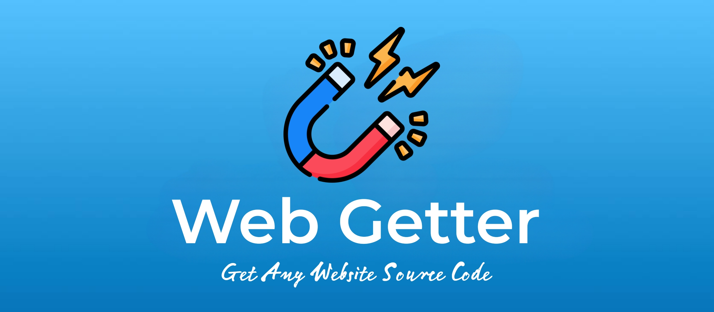
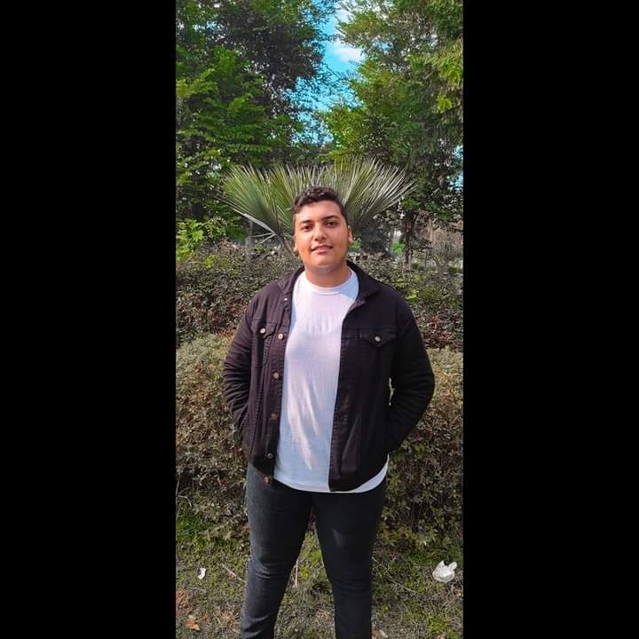
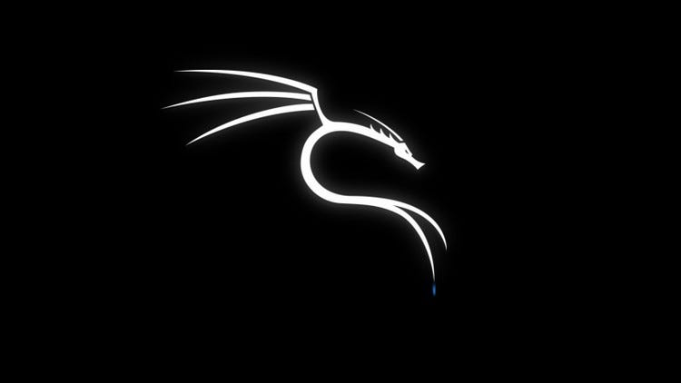
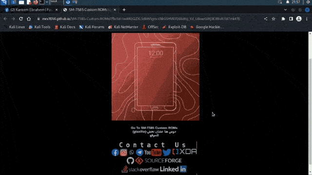
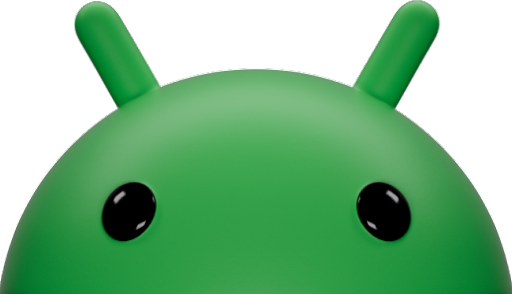

↗01 / TOOL
View repository ↗WebGetter
An open-source tool that helps you get any website's source code in minutes.
I'm MRX7014 — a developer exploring the edge between web, Android and open source. I turn curious ideas into useful tools.

const builder = { name: "MRX7014", focus: ["web", "android"], status: true };
I love understanding how things work — then making them work better. My journey spans websites, Android development, custom ROMs, Linux and ethical hacking.
When I'm not experimenting with a new tool, you'll find me contributing to open source or solving a stubborn technical problem.
More on GitHub ↗A small selection of projects from my open-source playground.

↗An open-source tool that helps you get any website's source code in minutes.

↗A free SSH Kali Linux server for security testing and experimentation.

↗Custom ROMs, recoveries and useful tools for the Galaxy Tab A 10.1.

↗Custom ROMs and recoveries for devices including Samsung A23 and Galaxy Tab A7.
I'm always open to interesting conversations, collaborations and new challenges.
Let's connect ↗